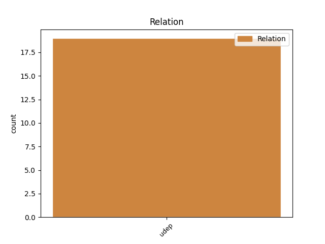
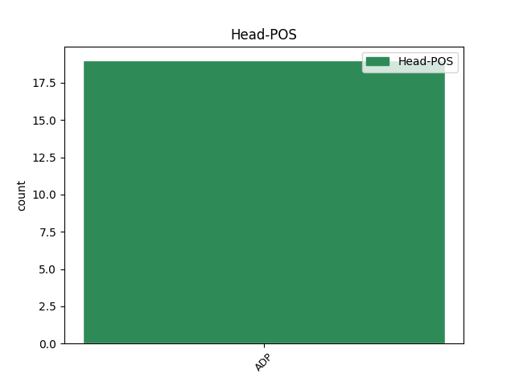
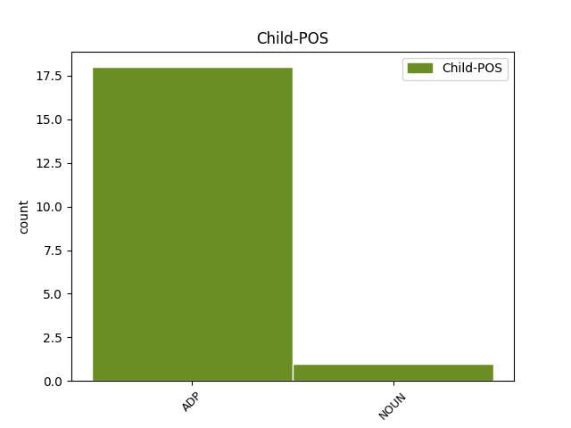

Distribution of features within this leaf



Agreement Rules sorted by frequency.
- When the dependent token is the underspecified dependency(udep) of the head token, and the head token is ADP
1 Principalele _ _ _ _ 0 _ _ _
2 campusuri _ _ _ _ 0 _ _ _
3 studențești _ _ _ _ 0 _ _ _
4 se _ _ _ _ 0 _ _ _
5 află _ _ _ _ 0 _ _ _
6 în _ _ _ _ 0 _ _ _
7 Tudor _ _ _ _ 0 _ _ _
8 Vladimirescu _ _ _ _ 0 _ _ _
9 ( _ _ _ _ 0 _ _ _
10 22 _ _ _ _ 0 _ _ _
11 cămine _ _ _ _ 0 _ _ _
12 ) _ _ _ _ 0 _ _ _
13 - _ _ _ _ 0 _ _ _
14 unde _ _ _ _ 0 _ _ _
15 se _ _ _ _ 0 _ _ _
16 află _ _ _ _ 0 _ _ _
17 cel _ _ _ _ 0 _ _ _
18 mai _ _ _ _ 0 _ _ _
19 mare _ _ _ _ 0 _ _ _
20 cămin _ _ _ _ 0 _ _ _
21 din din ADP Spsa AdpType=Prep|Case=Acc 0 _ _ _
22 partea _ _ _ _ 0 _ _ _
23 de de ADP Spsa AdpType=Prep|Case=Acc 21 udep _ _
24 sud-est _ _ _ _ 0 _ _ _
25 a _ _ _ _ 0 _ _ _
26 Europei _ _ _ _ 0 _ _ _
27 , _ _ _ _ 0 _ _ _
28 Titu _ _ _ _ 0 _ _ _
29 Maiorescu _ _ _ _ 0 _ _ _
30 ( _ _ _ _ 0 _ _ _
31 4 _ _ _ _ 0 _ _ _
32 cămine _ _ _ _ 0 _ _ _
33 ) _ _ _ _ 0 _ _ _
34 , _ _ _ _ 0 _ _ _
35 Târgușor-Copou _ _ _ _ 0 _ _ _
36 ( _ _ _ _ 0 _ _ _
37 4 _ _ _ _ 0 _ _ _
38 cămine _ _ _ _ 0 _ _ _
39 ) _ _ _ _ 0 _ _ _
40 , _ _ _ _ 0 _ _ _
41 Codrescu _ _ _ _ 0 _ _ _
42 ( _ _ _ _ 0 _ _ _
43 5 _ _ _ _ 0 _ _ _
44 cămine _ _ _ _ 0 _ _ _
45 și _ _ _ _ 0 _ _ _
46 complexul _ _ _ _ 0 _ _ _
47 internațional _ _ _ _ 0 _ _ _
48 Gaudeamus _ _ _ _ 0 _ _ _
49 ) _ _ _ _ 0 _ _ _
50 și _ _ _ _ 0 _ _ _
51 Agronomie _ _ _ _ 0 _ _ _
52 ( _ _ _ _ 0 _ _ _
53 4 _ _ _ _ 0 _ _ _
54 cămine _ _ _ _ 0 _ _ _
55 ) _ _ _ _ 0 _ _ _
56 . _ _ _ _ 0 _ _ _
Disagree Examples:
1 Președintele _ _ _ _ 0 _ _ _
2 rus _ _ _ _ 0 _ _ _
3 , _ _ _ _ 0 _ _ _
4 Vladimir _ _ _ _ 0 _ _ _
5 Putin _ _ _ _ 0 _ _ _
6 , _ _ _ _ 0 _ _ _
7 a _ _ _ _ 0 _ _ _
8 întreprins _ _ _ _ 0 _ _ _
9 o _ _ _ _ 0 _ _ _
10 vizită _ _ _ _ 0 _ _ _
11 surpriză _ _ _ _ 0 _ _ _
12 în _ _ _ _ 0 _ _ _
13 Cecenia _ _ _ _ 0 _ _ _
14 , _ _ _ _ 0 _ _ _
15 cu cu ADP Spsa AdpType=Prep|Case=Acc 18 udep _ _
16 o _ _ _ _ 0 _ _ _
17 săptămână _ _ _ _ 0 _ _ _
18 înaintea înaintea ADP Spsg AdpType=Prep|Case=Gen 0 _ _ _
19 scrutinului _ _ _ _ 0 _ _ _
20 prezidențial _ _ _ _ 0 _ _ _
21 din _ _ _ _ 0 _ _ _
22 republica _ _ _ _ 0 _ _ _
23 rusă _ _ _ _ 0 _ _ _
24 din _ _ _ _ 0 _ _ _
25 Caucaz _ _ _ _ 0 _ _ _
26 , _ _ _ _ 0 _ _ _
27 devastată _ _ _ _ 0 _ _ _
28 de _ _ _ _ 0 _ _ _
29 război _ _ _ _ 0 _ _ _
30 . _ _ _ _ 0 _ _ _
1 Devenise _ _ _ _ 0 _ _ _
2 deodată _ _ _ _ 0 _ _ _
3 îngrijorată _ _ _ _ 0 _ _ _
4 și _ _ _ _ 0 _ _ _
5 și- _ _ _ _ 0 _ _ _
6 a _ _ _ _ 0 _ _ _
7 retras _ _ _ _ 0 _ _ _
8 pașii _ _ _ _ 0 _ _ _
9 unde _ _ _ _ 0 _ _ _
10 îl _ _ _ _ 0 _ _ _
11 priponise _ _ _ _ 0 _ _ _
12 pe pe ADP Spsa AdpType=Prep|Case=Acc 0 _ _ _
13 Înotătorul _ _ _ _ 0 _ _ _
14 Lacurilor lac NOUN Ncfpoy Case=Dat,Gen|Definite=Def|Gender=Fem|Number=Plur 12 udep _ SpaceAfter=No
15 . _ _ _ _ 0 _ _ _
1 ( _ _ _ _ 0 _ _ _
2 c _ _ _ _ 0 _ _ _
3 ) _ _ _ _ 0 _ _ _
4 este _ _ _ _ 0 _ _ _
5 atestat _ _ _ _ 0 _ _ _
6 ca _ _ _ _ 0 _ _ _
7 fiind _ _ _ _ 0 _ _ _
8 conform conform ADP Spsd AdpType=Prep|Case=Dat 0 _ _ _
9 cu cu ADP Spsa AdpType=Prep|Case=Acc 8 udep _ _
10 condițiile _ _ _ _ 0 _ _ _
11 stabilite _ _ _ _ 0 _ _ _
12 de _ _ _ _ 0 _ _ _
13 Regulamentul _ _ _ _ 0 _ _ _
14 ( _ _ _ _ 0 _ _ _
15 CE _ _ _ _ 0 _ _ _
16 ) _ _ _ _ 0 _ _ _
17 nr. _ _ _ _ 0 _ _ _
18 998/2003 _ _ _ _ 0 _ _ _
19 . _ _ _ _ 0 _ _ _